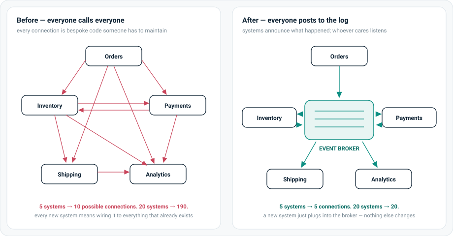
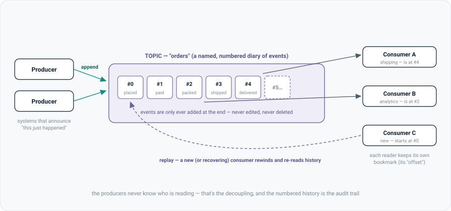

For fifty years, software mostly talked by asking and waiting — like a phone call. This page explains why that kept breaking as systems multiplied, and how a simple idea — announce what happened, let others listen — became the backbone of modern platforms.
The old way: when system A needs something from system B, it calls B directly and waits for the answer. Simple with two systems. With fifty, you get a tangle of direct connections where everything depends on everything, one slow system stalls the chain, and data is copied around until nobody knows which copy is right.
The event-driven way: when something happens (an order is placed, a payment clears), the system that saw it happen posts a small fact — an event — to a shared, append-only log. Any system that cares subscribes and reacts in its own time. Nobody calls anybody. The log keeps the full history, so you can replay the past, recover from failures, and audit every decision.
Before you can see what event-driven fixes, you need to see what it replaces — and why the thing it replaces was a perfectly reasonable idea.
Most software communication is request/response: system A sends a request to system B, then waits for B's answer before doing anything else. Every website you've used works this way — your browser asks a server for a page, the server responds. It's a phone call: you dial, you wait for them to pick up, you talk, you hang up.
This model is popular because it's easy to reason about. The question and the answer happen together, in order. If something goes wrong you get an error straight back. For one caller and one callee, there is nothing wrong with it — and for simple lookups ("what's this customer's address?") it is still the right tool today.
The trouble starts when it becomes the only tool. A modern company runs dozens or hundreds of systems — orders, payments, inventory, shipping, fraud checks, analytics, marketing. When they all talk by calling each other directly, three things happen, and they happen to every organisation, every time:
Every pair of systems that needs to talk gets its own bespoke connection. Five systems can need up to 10 connections; twenty can need 190. Each one is code somebody wrote, nobody documented, and everybody is afraid to touch.
A calls B, B calls C, C calls D. Your request is now only as fast as the slowest link — and if D is down, the failure travels all the way back up the chain. One sick service makes the whole company look broken.
To call system B, system A has to know B exists, where it lives, and what its interface looks like. Multiply that by every pair, and changing anything means coordinating everyone. This is what architects mean by tight coupling.
Request/response systems usually store only the current state — the balance is $90. Yesterday it was $100, but that fact was overwritten. When the numbers look wrong, there's no record of how they got that way.
The industry didn't jump straight to event streams. It tried three big workarounds first, and each one taught a lesson. This history is worth knowing because you'll meet all of these systems, still alive, inside any large enterprise.
Systems exchanged data by writing big files to disc overnight — "every night at 2am, export all of today's orders and load them into the warehouse." Simple, robust, and still everywhere in banking.
What broke: everything ran on yesterday's data. A decision made at 3pm used the world as it looked last night. Batch is why "the report doesn't match the system" is a sentence every large company has said.
The first real move away from phone calls: system A drops a message in a queue, system B picks it up when ready. The caller no longer waits — a genuine improvement, and queues like IBM MQ still run core banking today.
What broke: a queue is a hand-off between one sender and one receiver, and once a message is consumed it's gone. Ten systems want the same order data? Ten queues. Need to re-process last week? Too late — the messages were deleted on delivery. No shared history, and the tangle came back, just with queues instead of calls.
Idea: stop wiring systems to each other and route everything through one smart middleman that translates formats, applies rules, and orchestrates workflows. On the whiteboard, it looks like the diagram on the right of §04 — one hub, spokes around it.
What broke: all the intelligence moved into the middleman. The ESB became the most complicated system in the company — a bottleneck, a single point of failure, and the thing every project queued behind ("the bus team can fit you in next quarter"). The lesson the industry took away: keep the pipes dumb; keep the smarts at the endpoints.
Companies broke their big applications ("monoliths") into many small independent services so teams could build and release without waiting on each other. The decomposition worked.
What broke: the services still talked by phone call — synchronous REST APIs. The result got a name: the distributed monolith. All the coupling of the old system, plus network failures in between every function call. The waiting-chain and tangle problems from §01, at scale.
At LinkedIn, dozens of systems (search, recommendations, analytics, monitoring…) all needed the same activity data — every click, view, and connection. Wiring each producer of data to each consumer was the N×M tangle again, and their batch pipelines meant the data arrived hours late.
Their answer, open-sourced as Apache Kafka, was almost embarrassingly simple: put one shared, append-only log in the middle. Producers write facts to the end of it; any number of consumers read at their own pace; the log keeps everything, so readers can rewind. It combined the queue's "don't wait" with something no queue had — durable, replayable history that many readers can share.
The same four failures keep appearing in the history above. Here they are with their proper names — these are the words that make the rest of the pattern make sense.
| The name | What it means, plainly | What it feels like in a real programme |
|---|---|---|
| Tight coupling | Systems know too much about each other, so changing one forces changes in others. | "We can't touch the pricing service until the checkout team, the app team, and the partner API all agree." Nothing ships. |
| Cascading failure | In a chain of synchronous calls, one failure travels: D goes down, so C times out, so B times out, so A shows an error. | A minor internal service has an incident and the customer-facing site goes down with it. The post-mortem is always the same diagram. |
| Stale data | Decisions made on data that was true yesterday (batch) or minutes ago (caches), not now. | Two dashboards disagree; the fraud model scores a transaction against last night's account state; "which number is right?" meetings. |
| Lost history | Only current state is stored; how it got that way was overwritten along the way. | An auditor (or regulator) asks "why did the system make this decision on 12 March?" and the honest answer is "we can't reconstruct it." |
Event-driven architecture is one change of direction, applied consistently.
An event is a small record of a fact: "order #1042 was placed at 14:03." Not a command, not a question — just something that happened, written down. Facts have a useful property: they're true forever. The order was placed at 14:03; nothing that happens later changes that.
In an event-driven system, when something happens, the system that saw it announces it by writing an event to a shared broker — and then gets on with its life. It doesn't know or care who's listening. Systems that care subscribe and react in their own time.
The everyday analogy: a team that works by phone calls versus a team that works in a group chat. With phone calls, telling five people means five calls, each interrupting someone, each failing if they don't pick up. In the group chat you post once — "the release is done" — and everyone reads it when they're ready. New team member? They scroll back and catch up on history. Nobody had to know who needed the information.

The broker in the middle isn't magic — it's a very disciplined diary. Four ideas explain essentially all of Kafka (and its cloud cousins, Google Pub/Sub and AWS Kinesis).

Events are organised into topics by subject: an "orders" topic, a "payments" topic. Producers append to the end; the log never edits or deletes what's written. (For volume, a topic is split into partitions — parallel lanes that let many readers share the work.)
Each event gets a sequence number. Each consumer tracks which number it has read up to — its offset. Readers go at their own pace, and a slow reader never slows a fast one, because reading doesn't remove anything.
Because nothing is deleted, any consumer can rewind to an earlier offset and re-read. Crashed halfway through? Resume from your bookmark. New system joining? Start from zero and build your view from history. Found a bug in last week's processing? Fix it and replay the week.
Several copies of the same service can form a consumer group: the platform shares the partitions among them, and if one copy dies, its share is automatically handed to the others. Scaling and failover, built into the infrastructure instead of your code.
Each §03 problem has a direct answer — not from extra code, but from the shape of the architecture.
| The old problem | The event-driven answer |
|---|---|
| Tight coupling — everyone knows everyone | Producers only know the topic. You can add, replace, or remove consumers without telling anyone. The 190-connection tangle becomes 20 connections to one broker. |
| Cascading failure — one slow link stalls the chain | Nobody waits for anybody. If shipping is down for an hour, orders keep flowing into the log; shipping catches up from its bookmark when it recovers. Failures are contained and self-healing, not contagious. |
| Stale data — decisions on yesterday's world | Consumers see events seconds after they happen, not after tonight's batch. "Real-time" stops being a project and becomes the default. |
| Lost history — state overwrote its own past | The log is the history: every fact, in order, with timestamps. For auditors and regulators, "show me exactly what the system knew when it decided" has a mechanical answer. |
No pattern is free, and knowing the costs is what separates "read a blog post" from "has thought about it".
Announcing takes a moment to propagate — for a few seconds, different systems may hold slightly different views of the world. Usually fine (shipping can learn about an order two seconds late), but anything needing an instant authoritative answer — "did this payment clear, yes or no, right now?" — still wants request/response.
With phone calls you can trace one request down a call stack. With events, the "flow" is spread across systems reacting to each other, so answering "what happened to order 1042?" needs tracing tools and event IDs that tie the story together. Debugging is different, and teams must learn it.
The platform promises "at-least-once" delivery — in failure cases a consumer may see the same event twice. Handlers must be idempotent: processing the same event twice has the same effect as once ("set status to shipped", not "add one to the ship count").
A simple app with one database doesn't need an event backbone. The pattern earns its complexity when many systems need the same facts at different times — which is exactly the situation every large enterprise is in, and most startups aren't yet.
The pattern is older than software — and once you see it, you see it everywhere.
A bank ledger is an event log. Accountants worked this out centuries ago: never erase, only append. Your balance isn't a number stored somewhere that gets overwritten — it's the result of replaying every deposit and withdrawal since the account opened. When something looks wrong, the ledger is the audit trail. Double-entry bookkeeping is event sourcing with a quill.
A rideshare trip is a stream of events. Ride requested → driver assigned → driver arriving → trip started → trip ended → payment settled. The app on your phone, the driver's app, pricing, fraud checks, and the driver-payout system are all consumers of the same event stream, each reacting to the parts they care about at their own pace.
Netflix, LinkedIn, banks' fraud systems — anywhere a click needs to influence a recommendation, a feed, or a risk score within seconds, there is an event backbone underneath. This is also the foundation the AI-agent world is now building on — that story is the companion page: Event-Driven Agents.
The terms above, gathered for quick revision.
| Term | Plain English |
|---|---|
| Request/response | The phone call: ask, wait, get an answer. Still right for queries needing an immediate answer. |
| Event | A small, permanent record of a fact: "order #1042 was placed at 14:03." |
| Producer / consumer | A system that writes events / a system that reads and reacts to them. The same system is often both. |
| Broker | The shared infrastructure holding the logs — Kafka, Pub/Sub, Kinesis, Event Hubs. |
| Topic | A named event diary for one subject ("orders"). Split into partitions for parallelism. |
| Offset | A consumer's bookmark — the position in the log it has read up to. |
| Replay | Rewinding to an earlier offset and re-reading history — the recovery, onboarding, and bug-fix superpower. |
| Consumer group | Copies of one service sharing a topic's partitions; the platform rebalances work when members join or die. |
| Tight / loose coupling | How much systems must know about each other. Events buy loose coupling: producers know only the topic. |
| Eventual consistency | Different systems briefly hold slightly different views while events propagate — the main price of the pattern. |
| Idempotent | Safe to apply twice: handling a duplicate event changes nothing the second time. |
| Dead-letter queue | The "needs a human" tray — where events that repeatedly fail processing get parked for review instead of being lost. |
| Event sourcing | Storing the events as the source of truth and computing current state by replaying them — the bank-ledger idea, formalised. |
| Stream processing | Continuously transforming or joining events as they flow (Flink, Dataflow) rather than in nightly batches. |
Next in this series: Event-Driven Agents — what happens when the consumers on the log can reason. Related: Data Fabric — the governance layer over the data these events flow through.